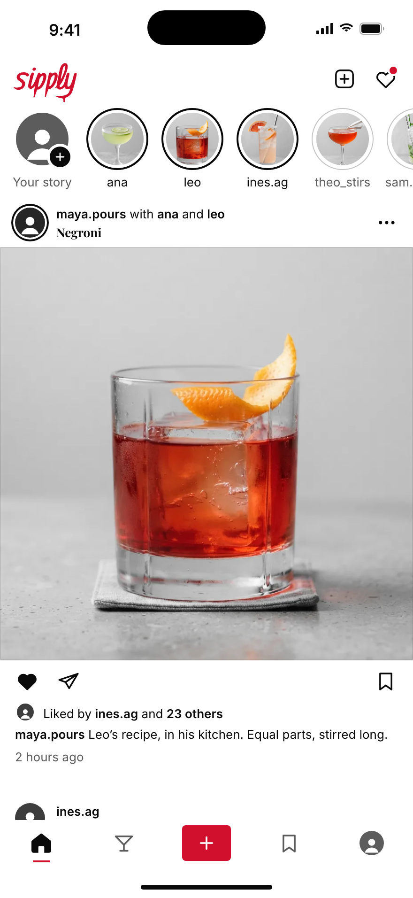
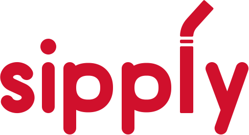
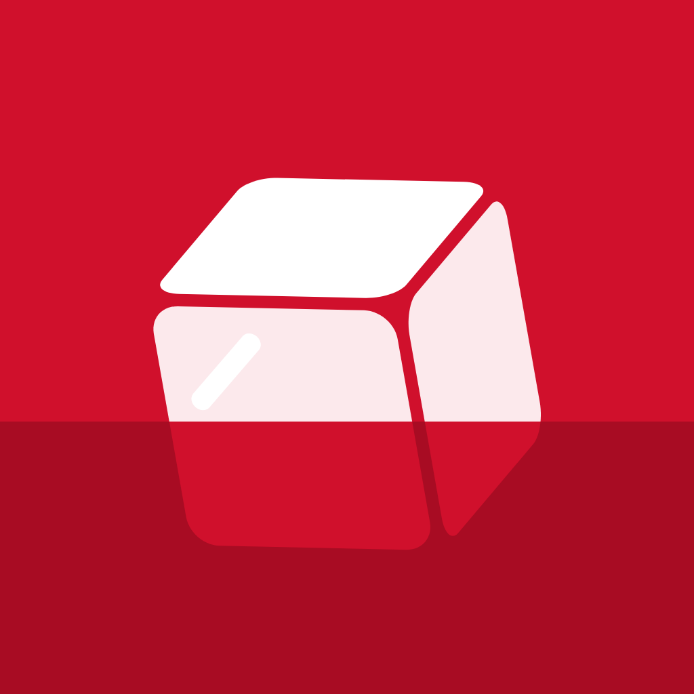
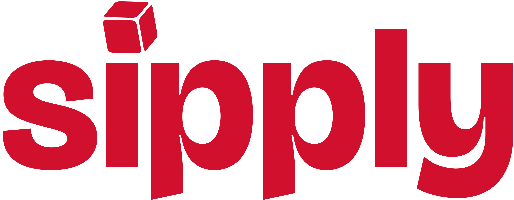
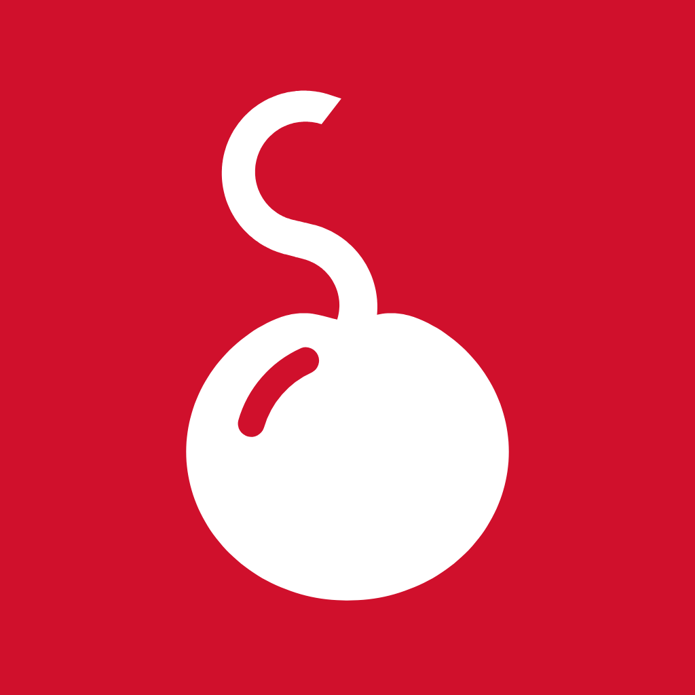
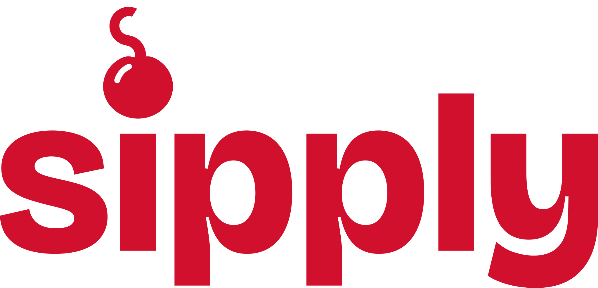
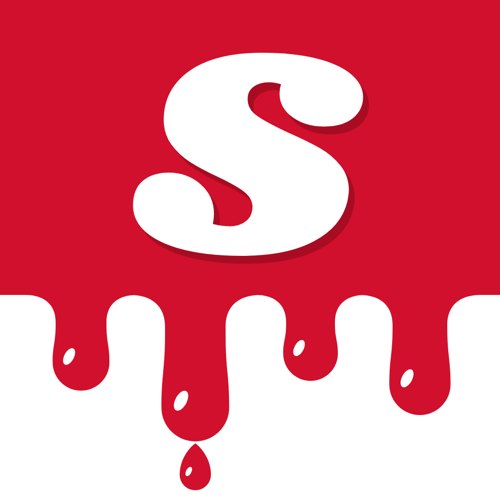
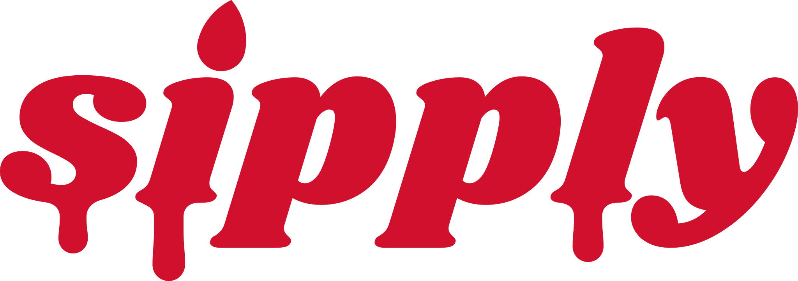
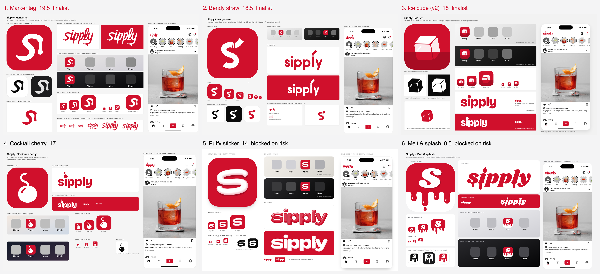

Sipply: new logo
Six younger directions in Campari red, judged by three readers (Gen Z, craft, risk), each out of 10. The top three were refined into finalists. Pick one and the intro film gets rebuilt around it.
Recommendation: Marker tag. It is the only one the Gen Z judge read as made by their generation rather than designed for them, it scored lowest on risk among the young-reading options, and its strokes are already centrelines, so it gives the cleanest 5 s film.


Finalists, by score
1. Marker tag
19.5 / 30recommendedSipply tagged with a red paint pen. The icon is the script's s on its own, thrown on at 9 degrees, with the paint pooling where the pen lands and running straight down.



For Feels like something 18 to 24 year olds would make, not a brand system made for them; no toy or candy cues; easiest film.
Against Red with white script is near Coca-Cola, so lead with red on white; the drip bead may read as "!" at 29 pt 1x.
Film idea
Opens on the white splash with the tilted red s. The pool swells and the drip runs (0 to 0.6 s), the s un-draws along its centreline and straightens (to 1.4 s), then the wordmark draws on in true stroke order with pen lifts, the i dot dabbed last and the swash drip falling at about 3.0 s. The wordmark shrinks into Home's top bar by 4.2 s and Home fades up by 5.0 s. Ease-out only, no bounce, no extra splatter.
2. Bendy straw
18.5 / 30One bendy straw draws a lowercase s, leaning forward 7 degrees, with two rib cuts before the bend. In the wordmark the straw is the l.

For The most coherent drawn system: one tube width, an s that holds at 1x, well-spaced monoline letters.
Against The tip reads as an accent ("ś", "sippĺy") at small sizes, and a straw plus "Sipply" leans toward juice boxes and sippy cups.
Film idea
Hold the splash, then the straw flexes once so the ribs squeeze and a single glint crosses them (0.4 to 1.2 s). The s straightens and slides into the wordmark while i, p, p, y write on (to 2.6 s); the l rises as a fresh straw and bends over (to 3.2 s). The wordmark moves to Home's top-left by 4.2 s and Home fades in by 5 s. Deliberately no sipping highlight.
3. Ice cube
18 / 30A heavy lowercase "sipply" in Bricolage Grotesque whose i dot is a small faceted ice cube. The icon is that cube floating in Campari: white above the waterline, red seen through the drink below.


For Cleanest type and the most legible Home wordmark; the safest fit with the black-and-white app; the AI-style sparkle is gone.
Against Only the full-colour icon reads clearly as ice; in one colour the cube can look like a parcel or AR glyph, and at 29 pt the waterline is just a darker band.
Film idea
The red cube drops as a Campari fill wipes up and it takes on its icon colours. One clink: a small sideways jolt, a single ripple, an ease-out settle. A glint crosses the front face at 1.6 s, then the drink drains and the cube shrinks into the i dot while "sipply" rises letter by letter. It holds, travels to Home's top bar and the feed fades in by 5.0 s.
The other three


Cocktail cherry 17
A cocktail cherry whose stem curls into the s; the cherry also dots the i.
Missed the cut: the thin stem vanishes at 1x so it reads as a cartoon bomb, and cherries carry candy and Shirley Temple cues.
Puffy sticker 14
Inflated Y2K vinyl-sticker lettering with a fat white s icon.
Blocked on risk: reads as marshmallow or candy packaging, the profile App Review 1.4.3 flags for under-18 appeal.


Melt & splash 8.5
Dripping Shrikhand lettering and a tile dipped in Campari.
Blocked on risk: the wordmark reads "$ipply", red drips read as blood, and the half-white tile breaks the icon shape.
All six boards
